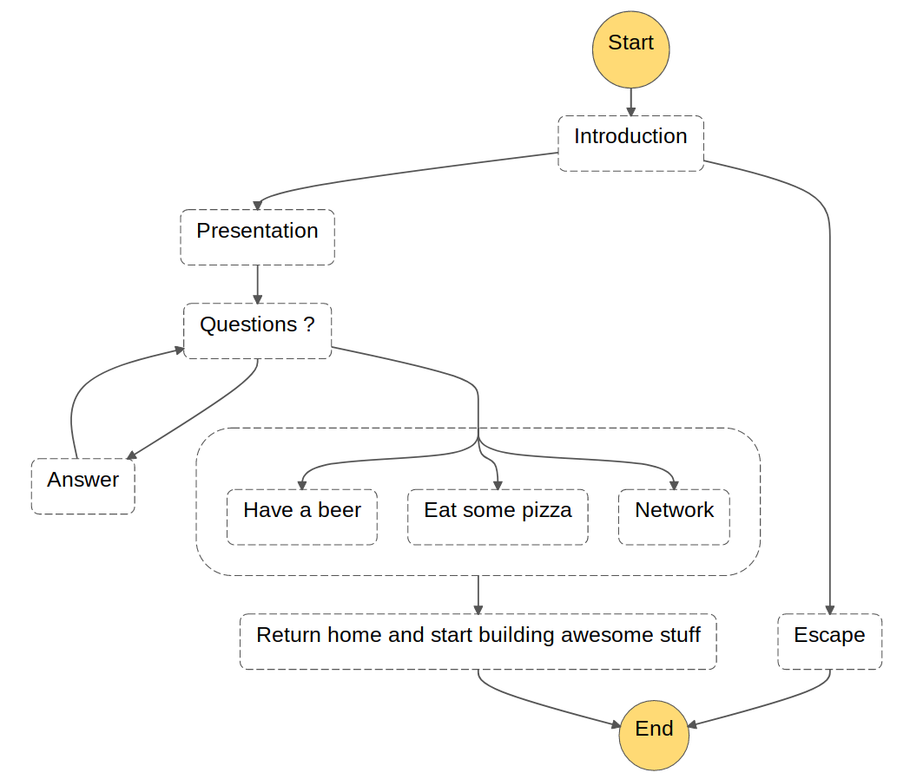
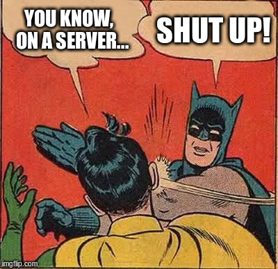
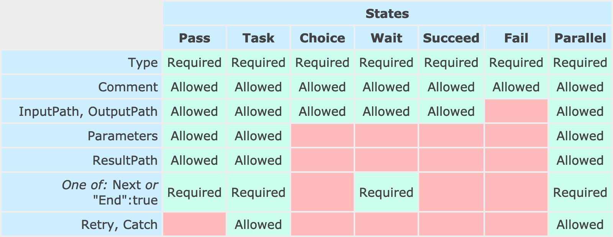

AWeSome
Step Functions
Who am I

Agenda
Meetup definition
{
"StartAt": "Introduction",
"States": {
"Introduction": {
"Type": "Pass",
"Catch": [ {
"ErrorEquals": [ "Not interested" ],
"Next": "Escape"
} ],
"Next": "Presentation"
},
"Escape": {
"Type": "Pass",
"End": true
},
"Presentation": {
"Type": "Pass",
"Next": "Questions ?"
},
"Questions ?": {
"Type" : "Choice",
"Choices": [ {
"Variable": "$.crystalClear",
"BooleanEquals": true,
"Next": "Answer"
} ],
"Default": "Have fun"
},
"Answer": {
"Type": "Pass",
"Next": "Questions ?"
},
"Have fun": {
"Type": "Parallel",
"Next": "Return home and start building awesome stuff",
"Branches": [ {
"StartAt": "Have a beer",
"States": {
"Have a beer": {
"Type": "Pass",
"End": true
}
}
}, {
"StartAt": "Eat some pizza",
"States": {
"Eat some pizza": {
"Type": "Pass",
"End": true
}
}
}, {
"StartAt": "Network",
"States": {
"Network": {
"Type": "Pass",
"End": true
}
}
} ]
},
"Return home and start building awesome stuff": {
"Type": "Pass",
"End": true
}
}
}What is an orchestrator?
Component coordination layer
Why do I need an orchestrator?
TL;DR: To do what FaaS can't
Manage states
- Manual step (validation link in an email)
- Send an email 24 hours after subscription
- Asynchronous task
De-complexify a process
- Segregate tasks (fetch data, compute, save results)
- Ease debugging
- Adapt your resources (memory, timeout)
- Reuse your functions across services
Gather different compute layers
- Lambda
- Batch/Fargate job
- Activity (custom task)
Other solutions
Invoke a function from within another one
use only FaaS
code should be focusing on business logic, not on what should happen after
strong dependency between your functions
Build your own state management system
could be fun (see Netflix Conductor)
need to develop and maintain (don't you have higher priorities? 🤔)
Use a non-serverless solution
Language overview
Amazon State Language
https://states-language.net/spec.html
State machine
{
"StartAt": "FirstState",
"TimeoutSeconds": 3600,
"States": {
"FirstState": {
"Type": "Pass",
"End": true
}
}
}- Entry point
- List of states
- Configuration (timeout)
Task state
{
"Type": "Task",
"Resource": "arn:aws:states:us-east-1:123456789012:activity:HelloWorld",
"Next": "NextState"
}Works with Lambda and Activity
Choice state
{
"Type": "Choice",
"Choices": [ {
"Not": {
"Variable": "$.type",
"StringEquals": "Private"
},
"Next": "Public"
} ],
"Default": "DefaultState"
}- Use of JSON path
- 19 comparison operators
Wait state
{
"Type": "Wait",
"Seconds": 10,
"Next": "NextState"
}Time/Timestamp fixed or from the input (JSON path)
Parallel state
{
"Type": "Parallel",
"Branches": [ {
"StartAt": "Worker1",
"States": {
"Worker1": {
"Type": "Task",
}
}
}, {
"StartAt": "Worker2",
"States": {
"Worker2": {
"Type": "Task",
}
}
} ]
}- Parallelisation for unrelated tasks.
- Each branch contains a sub state machine.
And many others...
- Pass (useful to bind data)
- Wait (interval can be dynamic)
- Succeed
- Fail
Common fields
Reference paths
{ // Input
"title": "Numbers to add",
"numbers": { "val1": 3, "val2": 4 }
}{ // State definition
"InputPath": "$.numbers",
"ResultPath": "$.sum"
}{ // Output
"title": "Numbers to add",
"numbers": { "val1": 3, "val2": 4 },
"sum": 7
}- InputPath
- ResultPath
- OutputPath
Retry/Catch
{
"Retry": [ {
"ErrorEquals": [ "ErrorA", "ErrorB" ],
"IntervalSeconds": 1,
"BackoffRate": 2,
"MaxAttempts": 2
}, {
"ErrorEquals": [ "ErrorC" ],
"IntervalSeconds": 5
} ],
"Catch": [ {
"ErrorEquals": [ "States.ALL" ],
"Next": "Z"
} ]
}A few example of what we've built
Data classification algorithm
Was executed once a day on EC2, now divided in 8 lambdas
- Event driven
- Cleaner
- Easier to maintain and debug
- Visual logic
- Reprocessing workflow easily done by reassembling lambdas
Wrap a long/heavy job with Batch
Stateless
Long to start
Need to wait and loop in the state machine
Wrap a long/heavy job with Fargate
Stateless
More limited (no EFS access)
Wrap a long/heavy job with Activities
Can't be faster
Need a full time running poller
Reuse generic functions in many workflows
- Push notification, slack, email
- Error management
- Scale up/down resources before/after your process (DynamoDB capacities)
Tooling
Serverless framework integration
https://github.com/horike37/serverless-step-functions$ serverless plugin install -n serverless-step-functionState machine validation
https://github.com/airware/asl-validator$ npm install -g asl-validator
$ asl-validator --json-path definition.json
✓ State machine definition is validLocal execution
https://github.com/airware/stepfunctions-local$ npm install -g stepfunctions-local
$ stepfunctions-local start
$ aws stepfunctions --endpoint http://localhost:4584
create-state-machine
--name my-state-machine
--definition '{"Comment":"A Hello World example of the Amazon States Language using a Pass state","StartAt":"HelloWorld","States":{"HelloWorld":{"Type":"Pass","End":true}}}'
--role-arn arn:aws:iam::0123456789:role/service-role/MyRole
$ aws stepfunctions --endpoint http://localhost:4584
start-execution
--state-machine-arn arn:aws:states:local:0123456789:stateMachine:my-state-machine
--name my-execution
--input '{"comment":"I am a great input !"}'My whishlist to AWS
- Easy way to monitor executions (aggregate all the CloudWatch streams)
- Access the execution ID (add a context object)
- Dynamic parallel branches
- Provide a tmp storage available from all the execution
- Directly trigger executions from API Gateway, SNS, S3 or CloudWatch triggers, ...
- Defining reusable sub state machines
Readings
Questions?